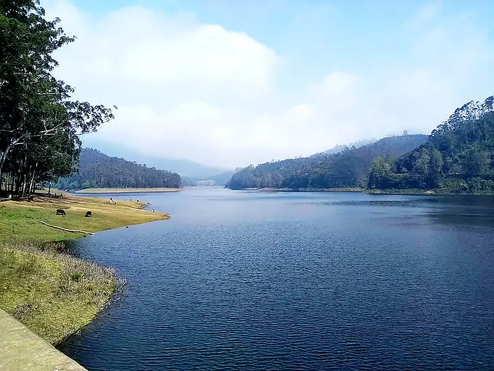

Kodaikanal · Village Tour
Kodaikanal Village Tour
Step into the soul of the hills — Poombarai and Mannavanur villages, a working sheep farm and a waterfall stop, on one full-day private cab route.
A complete loop out to the villages and back
One dedicated vehicle for the whole route
Villages, temples, a sheep farm and a waterfall
Personalised pricing back within hours
Tour highlights
Tour Highlights of the Village Tour
The village stops and viewpoints this tour package covers.
- 01Rose Garden
- 02Gundar Falls
- 03Mahalakshmi Temple
- 04Palani View
- 05Poombarai Village View
- 06Sheep Farm
- 07Murugan Temple (3,000 Years Old)
- 08Lake View
- 09Mannavanur Lake
The tour
Everything You Need for the Village Loop
This tour bundles the practical parts of a full-day rural sightseeing route into one booking.
- 01
Private Transportation
A dedicated cab for the full village loop — no sharing with strangers.
- 02
Local Driver-Guide
Someone who knows the village roads, the stop order and local etiquette.
- 03
Nine Stops
Rose Garden, Gundar Falls, two temples, two villages, a sheep farm and two lakes.
- 04
Full-Day Pace
Timed to cover the further-out villages without feeling rushed.
- 05
Parking & Tolls
Applicable parking, toll and driver charges included as per tour terms.
- 06
Local Coordination
One point of contact for the route and pickup — not a shared shuttle.
The route
Village Tour Route
A full-day loop out to Poombarai and Mannavanur, with temples, a sheep farm and a waterfall stop along the way.
Full Day · Villages & Countryside
9 Stops- 107:30 AM
Pickup & Rose Garden
Pickup from your hotel, then a short stop at Rose Garden before heading out of town.
- 208:30 AM
Gundar Falls
A forest waterfall stop on the way toward the villages.
- 309:30 AM
Mahalakshmi Temple & Palani View
A roadside temple stop followed by an open view toward Palani.
- 410:45 AM
Poombarai Village
A walk through one of the region's best-known hillside villages, terraced farms and all.
- 512:00 PM
Sheep Farm
A working sheep farm stop — a genuine slice of rural life in the Western Ghats.
- 601:00 PM
Lunch Break
A short stop for lunch on your own (not included in the tour).
- 702:15 PM
Murugan Temple & Lake View
A 3,000-year-old temple, followed by an open lake viewpoint.
- 803:30 PM
Mannavanur Lake
A quieter countryside lake, popular for its grasslands and cooler air.
- 905:30 PM
Drop-off
Return drive to your hotel, bus stand or railway station.
The exact route and stop order are confirmed against travel time, weather and village access conditions on the day.
Destinations
Places Covered on This Tour
Poombarai village anchors the loop, with a waterfall, temples, a sheep farm and two lakes built around it.




Tour Package Rates
Kodaikanal Village Tour Rates
Per-vehicle rates for the full-day village loop — final pricing is confirmed against travel dates, season and availability.
Rates are per vehicle for the full-day village loop, covering driver and fuel for the route. Confirm exact inclusions and current availability on WhatsApp.
Good to know
What's Not Included
Exact inclusions and exclusions may vary by selected tour option.
- Lunch
- Temple/entry donations
- Personal expenses
- Accommodation
- Optional activities
- Services outside the tour
Booking
How Booking Works
Four simple steps, and none of them involve waiting days for a callback.
- Choose This TourConfirm the full-day Village Tour.
- Share Your DetailsTravel date, number of guests and pickup location.
- Confirm the CabWe check availability and confirm pricing.
- Enjoy the VillagesPickup, nine stops and a comfortable drop-off.
Questions
Frequently Asked Questions
Quick answers about the Kodaikanal Village Tour. Anything else? Message us on WhatsApp.
Route
Rose Garden, Gundar Falls, Mahalakshmi Temple, Palani View, Poombarai village, a sheep farm, Murugan Temple, Lake View and Mannavanur Lake.
Yes — the villages sit further out than the in-town loop, so this route runs as a full day.
Logistics
Yes, the tour is built around private cab travel. Confirm vehicle type and capacity while booking.
Temple and entry donations are generally excluded unless specifically stated in the confirmed tour.
Booking
We check real availability and usually send pricing within a few hours of your enquiry.
Yes — see the full range of featured tours and ready-made packages on the Travels in Kodaikanal hub page.

Plan Your Kodaikanal Village Tour
Villages, temples, a sheep farm and a waterfall — one private cab, one simple booking.